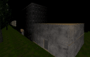
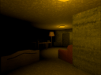
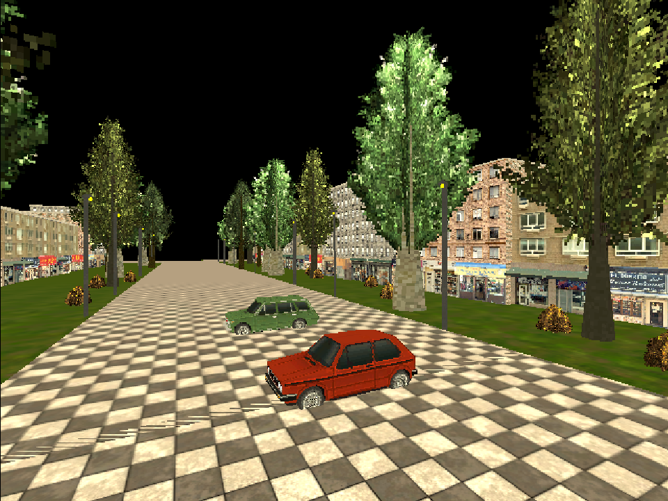

> Initializing ERCYCLE_OS_v1.0...
> Status: Online. Tracking core progress.
Immerse yourself in the classic PS1-style horror atmosphere. This small horror project is in active development. Release dates for Game Jolt and Itch.io will be announced here.


